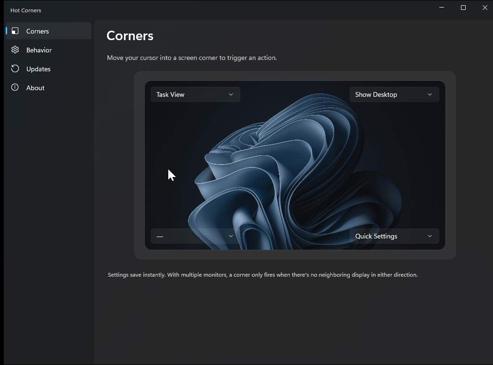

Four corners, fourteen actions
Open Task View, Show Desktop, Quick Settings, Notification Center, Search, Widgets, lock the PC, snap windows, switch virtual desktops, or put the display to sleep.
v0.4.6 · Code-signed
Slide your cursor into any corner of your screen and a configurable action fires. Task View, Show Desktop, virtual desktops, lock screen, and more. No subscriptions, no telemetry, no .NET runtime to install.
Works on Windows 10 and Windows 11. Roughly 80 MB installed. Signed by Bradley Wyatt so SmartScreen stays quiet.

Open Task View, Show Desktop, Quick Settings, Notification Center, Search, Widgets, lock the PC, snap windows, switch virtual desktops, or put the display to sleep.
A translucent quarter-circle gently fades in while you hold the corner, then blooms out when the action fires. Theme-aware and click-through.
Arms every display, or just your primary. Internal corners between monitors stay inert, the same way macOS hot corners behave.
Suppresses while a true full-screen app is in the foreground, so you won't open Task View mid-game.
Checks GitHub for new versions in the background and offers to install in place. SmartScreen stays quiet thanks to Azure Trusted Signing.
No telemetry, no accounts, no servers. Open source under the MIT license.
Grab the installer from the latest release. Pick the x64 build for a standard PC or the ARM64 build for a Surface Pro X or Snapdragon laptop.
Double-click. Accept the UAC prompt. The installer adds Hot Corners to Start with Windows and drops the tray icon next to your clock.
Double-click the tray icon to open the settings window. Pick an action for any of the four corners. Done.
api.github.com, to check whether a new release is out.